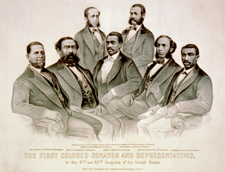
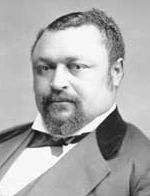
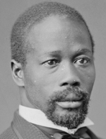
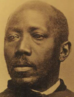
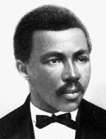
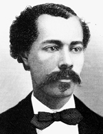

|
Reconstruction was a time of momentous changes in American political and social
life. In the aftermath of slavery's demise, the federal government guaranteed
the equality before the law of all citizens, black as well as white. In the
South, former masters and former slaves struggled to shape the new labor systems
that arose from the ashes of slavery, and new institutions--black churches,
public schools, and many others--redefined the communities of both blacks and
whites and relations between them. But no development during the turbulent years
that followed the Civil War marked so dramatic a break with the nation's
traditions, or aroused such bitter hostility from Reconstruction's opponents, as
the appearance of large numbers of black Americans in public office only a few
years after the destruction of slavery.
Before the Civil War, blacks did not form part of America's "political
nation." Black officeholding was unknown in the slave South and virtually

"The First Vote", published in 1867, takes a positive stance
on black voting; showing representatives from the key sources of African
American leadership; an artisan carrying his tools, a well dressed city-dweller,
and a soldier.
|
unheard of in the free states as well. Four years before the outbreak of civil
war, the Supreme Court decreed in the Dred Scott case that no black person could
be a citizen of the United States. In 1860, only five Northern states, all with
tiny black populations, allowed black men to vote on the same terms as white.
During Presidential Reconstruction (1865-67), voting and elective office in
the South continued to be restricted to whites, although a handful of blacks
were appointed to local offices and federal patronage posts. Black officeholding
began in earnest in 1867, when Congress ordered the election of new Southern
governments under suffrage rules that did not discriminate on the basis of race.
By 1877, when the last Radical Reconstruction governments were overthrown,
around 2,000 black men had held federal, state, and local public offices,
ranging from member of Congress to justice of the peace. Although much reduced
after the abandonment of Reconstruction, black officeholding continued to the
turn of the century, when most Southern blacks were disenfranchised, and, in a
few places, even beyond. The next large group of black officials emerged in
urban centers of the North, a product of the Great Migration that began during
World War I. Not until the passage of the Voting Rights Act of 1965 did
significant numbers of black Southerners again hold public office.
To Reconstruction's opponents, black officeholding symbolized the fatal
"error" of national policy after the Civil War--the effort to elevate former
slaves to a position of political equality for which they were utterly
unprepared and congenitally incompetent. "The negroes," a prominent Southern
Democrat later claimed, "undertook to perform what they were incapable of
doing." The Democratic press described constitutional conventions and
legislatures with black members as "menageries" and "monkey houses" that made a
travesty of democratic government, and ridiculed the former slaves who
considered themselves "as competent to frame a code of laws as Lycurgus." They
portrayed black officials as ignorant and propertyless, lacking both the
education and the economic stake in society supposedly necessary for intelligent
governance. Their bitter denunciations were echoed by influential Northern
critics of Reconstruction like journalist James S. Pike, who wrote of the South
Carolina legislature, "It is impossible not to recognize the immense proportion
of ignorance and vice that permeates the mass." Some opponents of Reconstruction
tried to erase black officials from the historical record altogether. Soon after
Democrats regained control of Georgia's government, Alexander St. Clair Abrams,
who compiled the state's legislative manual, decided to omit black lawmakers
from the volume's biographical sketches. It would be absurd, he wrote, to record
"the lives of men who were but yesterday our slaves, and whose past careers,
probably, embraced such menial occupations as boot-blacking, shaving,
table-waiting, and the like."
These contemporary views were elaborated by the anti-Reconstruction
historians whose works shaped public and scholarly perceptions for much of this
century. In popular representations such as D. W. Griffith's film Birth of a
Nation, Claude G. Bowers's sensationalized best-seller The Tragic Era
(which described Louisiana's Reconstruction legislature as "a zoo"), and
Margaret Mitchell's immensely popular novel Gone with the Wind, the
alleged incompetence of black officeholders and the horrors of "Negro rule"
justified Reconstruction's violent overthrow and Northern acquiescence in the
South's nullification of the Fourteenth and Fifteenth Amendments.
Anti-Reconstruction scholars faithfully echoed Democratic propaganda of the
post-Civil War years. "The Negroes," wrote E. Merton Coulter in 1947, "were
fearfully unprepared to occupy positions of rulership," and black officeholding
was "the most spectacular and exotic development in government in the history of
white civilization . . . [and the] longest to be remembered, shuddered at, and
execrated." As late as 1968, Coulter, the last wholly antagonistic scholar of
the era, described Georgia's most prominent Reconstruction black officials as
swindlers and "scamps," and suggested that whatever positive qualities they
possessed were inherited from white ancestors.
These judgments stemmed from a combination of racism and an apparent
unwillingness to do simple research about black officeholders. Coulter, for
example, wrote of the Georgia constitutional convention of 1868-69, "most of the
[37] Negro delegates could not read," whereas according to the census of 1870
and other readily available sources, 22 were literate, and only 7 were
definitely unable to read or write. Scholars faithfully repeated the charge
raised in 1868 by South Carolina's State Democratic Executive Committee, that
only 14 of 71 black delegates to the state's constitutional convention could be
found on local tax lists. If true, this said more about the state's antiquated
tax system than the economic standing of the black officials, since no fewer
than 31 owned more than $1,000 worth of property, a substantial sum in those
days.
The task of rewriting Reconstruction's history, and offering a more
sympathetic and nuanced portrait of its black officeholders, began early in this
century, when surviving veterans of the era such as John R. Lynch, black
scholars such as Alrutheus A. Taylor, Luther P. Jackson, and W. E. B. Du Bois,
and white historians such as T. Harry Williams offered penetrating challenges to
the dominant interpretation. Not until the 1960s, however, did revisionism,
inspired by the civil rights revolution, sweep over the field, irrevocably
laying to rest the earlier viewpoint and producing a host of important new
studies of Reconstruction at the state and national levels. Today, not only has
the history of the era been completely rewritten, but most scholars view
Reconstruction as a laudable, though flawed, effort to create a functioning
interracial democracy for the first time in American history, and view
Reconstruction's overthrow as a tragedy that powerfully affected the subsequent
course of American development.
Although blacks held office in every part of the old Confederacy during
Reconstruction (as well as in Missouri and the nation's capital), the number
varied considerably from state to state. Clearly, the size of a state's black
population helped to determine the extent of black officeholding. Of the eleven
|

In the first two Congresses following the ratification of the
Fourteenth Amendment, seven African Americans were sworn in as Members of
Congress: Robert DeLarge, Jefferson Long, Hiram Revels, Benjamin Turner, Josiah
Walls, Joseph Rainey, and Robert Elliott.
|
former Confederate states, blacks in 1870 comprised nearly 60 percent of the
population in South Carolina; over half in Mississippi and Louisiana; between 40
and 50 percent in Alabama, Florida, Georgia, and Virginia; over one-third in
North Carolina; and between one-quarter and one-third in Arkansas, Tennessee,
and Texas.6 Since in most states there were few white Republican voters, and
these in any case often proved reluctant to vote for black candidates, almost
all black officials represented localities with black majorities. Thus, it is
not surprising that South Carolina, Mississippi, and Louisiana had the largest
number of black officeholders, and Arkansas, Tennessee, and Texas relatively few
(none served in the Tennessee legislature during the state's brief
Reconstruction, and virtually none occupied posts at the county level in Texas).
South Carolina was the only state where blacks comprised a majority of the House
of Representatives throughout Reconstruction, and about half the state Senate
between 1872 and 1876. South Carolina and Louisiana, in addition, possessed
large communities of free blacks, many of them educated, economically
independent, and well positioned to demand a role in government from the outset
of Reconstruction. Mississippi's black leadership took longer to demand a
significant share of political power, but by the early 1870s, blacks there had
significantly increased their representation in the legislature and on county
boards of supervisors throughout the plantation belt. Together, these three
states account for more than half the black officeholders during
Reconstruction.
To the black percentage of the voting population, however, other factors must
be added that help explain the pattern of black officeholding, including the
length of time that Reconstruction survived, attitudes of white Republicans
toward blacks exercising political power, and the structure of state and local
government. In Georgia, despite a large black voting population, Reconstruction,
and with it, opportunities for blacks to hold office in most parts of the state,
ended relatively early. Although virtually all those blacks who held office were
Republicans (only fifteen were elected as Democrats or supported the Democratic
party once in office), the Republican party in the Southern states remained
under white control throughout Reconstruction. With one brief exception, all the
governors of Reconstruction were white, a fact that sometimes worked to limit
black officeholding, given the governors' broad powers of appointment.
Republican leaders in Florida and Georgia, bent on attracting white voters to
their party by limiting the number of black officials, framed constitutions with
legislative apportionments biased against black counties, and in which many
state and local offices were filled by appointment rather than election. In
Georgia, a sizable number of white Republicans went so far as to join with
Democrats to expel blacks from the first Reconstruction legislature, only to see
Congress order them reinstated. Even in South Carolina, blacks received
relatively little gubernatorial patronage at the local level. In North Carolina,
by contrast, where blacks were far from a majority of the population, the new
constitution democratized local government, allowing black voters in plantation
counties to choose their own officials. Here, in addition, white party leaders
proved willing to offer appointments to a significant number of blacks.
Nowhere in the South did blacks control the workings of state government, and
nowhere did they hold office in numbers commensurate with their proportion of
the total population, not to mention the Republican electorate. Nonetheless, the
fact that over 1,400 blacks occupied positions of political authority in the
South represented a stunning departure in American government. Moreover, because
of the black population's concentration, nearly all these officials served in or
represented plantation counties, home of the wealthiest and, before the Civil
War, most powerful Southerners. The spectacle of former slaves representing the
South Carolina rice kingdom and the Mississippi cotton belt in state
legislatures, assessing taxes on the property of their former owners, and
serving on juries alongside them, epitomized the political revolution wrought by
Reconstruction.
At every level of government, federal, state, and local, blacks were
represented in government during Reconstruction. Two sat in the United States
Senate (Hiram Revels and Blanche K. Bruce of Mississippi) and fourteen in the
House of Representatives. For the first time in American history, the nation had
black ambassadors: Don Carlos Bassett in Haiti and J. Milton Turner in Liberia.
Blacks also held numerous federal patronage appointments, including postmaster,
deputy U.S. marshal, treasury agent, and clerks in federal offices.
In December 1872, P. B. S. Pinchback became governor of Louisiana when he
succeeded Henry C. Warmoth, who had been suspended because of impeachment

Pinckney B. S. Pinchback
|
proceedings. Pinchback served until the inauguration five weeks later of William
P. Kellogg; a century and a quarter would pass until L. Douglas Wilder of
Virginia, elected in 1989, became the next black American to serve as governor.
Twenty-five major state executive positions (lieutenant governor, treasurer,
superintendent of education, secretary of state, and state commissioner) were
occupied by blacks during Reconstruction, and one, Jonathan J. Wright of South
Carolina, sat on a state supreme court. Of the just over 1,000 delegates to the
constitutional conventions of 1867-69 that created new structures of government
for the Southern states, 267 were black (they constituted a majority of the
delegates in South Carolina and Louisiana). And during Reconstruction, 683 black
men sat in the lower houses of state legislatures (4 presiding as Speaker of the
House), and 112 served in state senates.
In virtually every county with a sizable black population, blacks held some
local office during Reconstruction. At least 111 served as members of the boards
that governed county affairs, variously called the county commission, board of
supervisors, board of police, and police jury; of these, the largest number
included in this directory served in Mississippi, South Carolina, and North
Carolina. There were at least 41 black sheriffs (most in Louisiana and
Mississippi) and 25 deputy sheriffs.
Five held the office of mayor, and 132 served on city councils and boards of
aldermen (with sizable representations in communities from Petersburg to Little
Rock). Among the other important county and local offices occupied by blacks
were 17 county treasurers, 31 coroners, and 35 tax collectors. At least 78
blacks served on local school boards, 109 as policemen or constables, and 228 as
justices of the peace or magistrates.
The backgrounds of the 1,465 black men who held office during Reconstruction
reflect the often neglected diversity of the black population in
mid-nineteenth-century America. Nearly half (324) of those for whom information
is available had been born free, and another 54 were former slaves who gained
their liberty before the Civil War, by manumission, purchase, or escaping to the
North. Fewer than 300,000 free blacks lived in the South in 1860, but they
clearly enjoyed far greater opportunities to obtain an education, accumulate
property, and observe public affairs than did most slaves. South Carolina and
Louisiana were the homes of the South's wealthiest and best-educated free black
communities, and about half the officeholders known to have been free served in
these two states. In Louisiana, where the New Orleans free community had
agitated incessantly for civil rights and the vote from the moment federal
forces occupied the city during the Civil War, the freeborn far outnumbered
former slaves in political office. Virginia was another state with a large free
black community, whose origins dated back to the colonial period and the
large-scale manumissions of the revolutionary era. Here too, well over half the
black officeholders had been free before the war. Many freeborn blacks were of
mixed racial ancestry, and among officeholders whose color is known, mulattos
outnumbered blacks, 594 to 517. (These figures, however, should be approached
with caution, since color designations generally derive from the judgments of
census takers and other highly subjective sources.)
Many of the freeborn officeholders were men of uncommon backgrounds and
abilities. An uncle of Louisiana senator Emile Detiege had been an officer in
Napoleon's army, and Andrew J. Dumont of the Louisiana House and Senate had
served in Mexico as an army officer under Emperor Maximilian. Ovid Gregory of
Alabama, a member of the constitutional convention and legislature, was fluent
in Spanish and French and had traveled widely in the United States and Latin
America before the Civil War. James H. Jones, deputy sheriff of Wake County,
North Carolina, had worked as coachman and personal servant for Jefferson Davis
during the Civil War. Jones helped the Confederate president escape from
Richmond in April 1865, and three decades later drove the funeral car when
Davis's body was interred in a Virginia cemetery.
Many freeborn officeholders had held themselves aloof from the plight of
slaves before the Civil War. Twenty-two had themselves been slaveholders, nearly
all in South Carolina and Louisiana. A few held slaves by necessity, owning a
relative who, according to state law, could not be freed without being compelled
to leave the state. Others were craftsmen whose slaves worked in their shops or
entrepreneurs who purchased slaves as an investment, and one, Antoine Dubuclet,
subsequently Louisiana's Reconstruction treasurer, was a sugar planter who owned
over 100 slaves in 1860. A number of South Carolina freeborn officeholders were
members of the exclusive Brown Fellowship Society, which barred those of dark
complexions from membership.
On the other hand, a number of free black officials had placed themselves in
considerable danger before the war by offering clandestine assistance to slaves.
James D. Porter, a member of Georgia's legislature during Reconstruction, had
operated secret schools for black children in Charleston and Savannah. Although
a slaveholder himself, William Breedlove, who served in Virginia's
constitutional convention, had been convicted during the Civil War of helping
slaves escape to Union lines. Another freeborn Virginian, William Hodges, who
served as superintendent of the poor for Norfolk County during Reconstruction,
had been arrested around 1830 for providing slaves with forged free papers,
leading to the persecution of his entire family and their flight to the North.
William's brother Willis, a constitutional convention delegate, described free
blacks and slaves as "one man of sorrow."
No fewer than 138 officeholders lived outside the South before the Civil War.
Most were individuals born in the North (where about 220,000 free blacks lived
in 1860), but their numbers also included free Southerners whose families moved
to the North, free blacks and a few privileged slaves sent North for education,
several immigrants from abroad, and fugitives from bondage. A majority held
office in Louisiana, Mississippi, or South Carolina, where opportunities were
greatest for aspiring black political leaders from outside the state. Although
these black "carpetbaggers" have received far less attention from historians
than their white counterparts, they included some of the era's most prominent
lawmakers and individuals with remarkable life histories. Mifflin Gibbs, a
native of Philadelphia, traveled to California in 1850 as part of the gold rush,
established the state's first black newspaper, moved to British Columbia in 1858
to engage in railroad and mining ventures, and eventually made his way to
Arkansas, where he became a judge, attorney, and longtime power in the
Republican party. Joseph T. Wilson, a customs inspector at Norfolk, had worked
on a whaling ship in the Pacific Ocean, and T. Morris Chester, appointed a
district superintendent of education during Louisiana's Reconstruction, had
lived in Liberia and Great Britain and visited Russia and France.
Ten black officials are known to have escaped from slavery before the Civil
War. Half had been born in Virginia, whose proximity to the North made flight
far easier than from the Deep South. Fugitive slaves who returned South during
or after the Civil War included some of Reconstruction's most militant black
leaders. Daniel M. Norton, who had escaped from Virginia around 1850, returned
to the Hampton area in 1864. The following year, he was "elected" as local
blacks' representative on a Freedmen's Bureau court, but was denied his place by
the Bureau. Embittered by this experience, Norton formed an all-black political
association that became the basis of a career in York County politics lasting
forty years. (His brother Robert, who had accompanied him in the escape, would
also become a Reconstruction officeholder. ) Another Virginia fugitive was
Thomas Bayne, who had failed in one escape attempt in 1844, and had finally
reached the North in 1855. Returning to Norfolk at the end of the Civil War,
Bayne immediately became involved in the movement for black suffrage, and
chaired a mass meeting one of whose resolutions declared, "Traitors shall not
dictate or prescribe to us the terms or conditions of our citizenship."
Described by one newspaper as an "eloquent and fiery orator," Bayne became the
most important black leader at the Virginia constitutional convention of 1867,
advocating, among other things, an overhaul of the state's antiquated taxation
system to shift the tax burden from the poor to large landowners.
Among the most radical of all black officeholders was Aaron A. Bradley, once
the slave of Francis Pickens, South Carolina's Civil War governor. Born around
1815, Bradley escaped during the 1830s to Boston, where he studied law and
became an attorney. He resumed to Georgia in 1865, and emerged as an articulate
champion of black suffrage and land distribution. Early in 1866, after helping
organize freedmen who resisted the restoration of land to their former owners,
and after delivering a speech containing disparaging remarks about Abraham
Lincoln and Secretary of War Edwin M. Stanton, Bradley was expelled from Georgia
by the Freedmen's Bureau. By the end of the year he resumed, and in 1867 held a
"confiscation-homestead" meeting in Savannah. He went on to serve in the
constitutional convention and state senate.
Despite the prominence of those born free or who in one way or another
acquired their freedom before 1860, the majority of black officeholders had
remained slaves until sometime during the Civil War. The number of former slaves
is almost certainly considerably larger than the 379 we know about, since a
majority of those whose origins are unknown hailed from states and regions, such
as Arkansas, Florida, Mississippi, and the plantation belts of Alabama and
Georgia, where virtually no free blacks resided before the Civil War. If the
urban free elite in most states took the lead in political organizing
immediately after the Civil War, once mobilization spread through the black belt
in 1867, former slaves came to supplant much of the early leadership. The
contours of the early lives of individual slaves are notoriously difficult to
trace, but enough is known about the Reconstruction officeholders to offer
insights into the experience of slavery and to suggest the diversity of life
histories encompassed within the South's "peculiar institution."
A number of ex-slave officials had occupied positions of considerable
privilege, including access to education, despite laws barring such instruction.
Several were sons of their owners and treated virtually as free; others, even
when not related by blood, were educated by their masters or other whites.
|

Blanche K. Bruce
|
Blanche K. Bruce, the future senator from Mississippi and possibly his owner's
son, was educated by the same private tutor who instructed his master's
legitimate child. Alabama legislator John Dozier had been owned by a Virginia
college president and acquired an extensive education, including a command of
Greek. Theophile L. Allain who served in both houses of the Louisiana
legislature, accompanied his planter father on a trip to Europe and was educated
by private tutors, and Ulysses S. Houston, a member of Georgia's legislature
during Reconstruction, was taught to read by white sailors while working as a
slave in Savannah's Marine Hospital. Some black officials had been allowed to
hire their own time and accumulate property, like Reconstruction congressman
Benjamin S. Turner, who operated a hotel and livery stable in Selma, Alabama,
while still a slave. William A. Rector, a Little Rock city marshal, had been
owned by Chester Ashley, U.S. senator from Arkansas, and as a youth played in
"Ashley's Band," a traveling musical troupe composed of the senator's slaves.
Rector was the only one to escape death when a steamboat on which the band was
sailing exploded.
In a few cases, the actions of privileged slaves and their owners reflected a
shared sense of mutual obligation. Walter F. Burton, sheriff and tax collector
of Fort Bend County, Texas, during Reconstruction, remained devoted to his
owner, who had taught him to read and write before 1860 and sold him several
plots of land after the Civil War. Mississippi legislator Ambrose Henderson, who
had been able to hire his own time as a slave barber, rescued his owner when the
latter was wounded in the Confederate army and brought him home to Mississippi.
Meshack Roberts of Texas protected his master's family while the owner was
fighting in the Civil War, and received a gift of land. Roberts later served in
the Texas House of Representatives.
Depending on the goodwill of a single individual, however, the status of even
the most privileged slave was always precarious, as the experience of a number
of Reconstruction officials illustrates. The death of a paternalistic owner was
often a time of disruption for his slaves, even those he had fathered. Future
Florida constitutional convention delegate and senator Robert Meacham was the
son of his owner, who "always told me that I was free." But after his father's
death, Meacham was forced to work as a slave for his own aunt. Especially when
the inheritance of property (including property in slaves) was involved, the
master's sense of obligation frequently followed him to the grave. John
Carraway, who served in Alabama's constitutional convention and legislature, was
the son of a planter and a slave mother, and was freed in his father's will. But
the "white guardians" to whom their care had been entrusted had Carraway's
mother sold "all for the purpose of getting possession of the property left us
by my father." Carraway remained free but was forced to leave the state.
Similarly, Reconstruction congressman John R. Lynch's Irish-born father arranged
in his will for the freedom of Lynch and his slave mother, but the white trustee
in charge of the arrangement forced Lynch to remain in slavery. Thomas M. Allen,
a Charleston slave, was freed in the will of his owner-father, along with his
mother and brother. But his father's relatives "stole" the family, Allen later
related, sold them to Georgia, and seized the money bequeathed to them. Allen
remained a slave until the end of the Civil War; during Reconstruction, he
served in Georgia's legislature.
These were only a few of the Reconstruction officials who had known firsthand
the horrors of slavery. Congressmen Jeremiah Haralson and John A. Hyman had both
been sold on the auction block; he was treated "as a brute," Hyman later wrote.
Richard Griggs, Mississippi's commissioner of immigration and agriculture, was
sold eighteen times while a slave; at one point, Griggs was owned by Nathan B.
|

Jeremiah Haralson
|
Forrest, later the Confederate general responsible for the murder of black
soldiers in the Fort Pillow massacre and a founder of the Ku Klux Klan. William
H. Heard, a deputy United States marshal and later a bishop in the African
Methodist Episcopal church, was sold twice before the Civil War, and saw his
mother used as a "breeder." Florida legislator John Proctor was the son of a
free black man who had bonded himself to purchase the freedom of his slave wife,
defaulted, and had his wife and children repossessed. Virginia constitutional
convention delegate John Brown, a slave in Southampton County, saw his wife and
two daughters sold to Mississippi, and the sister, two daughters, and a son of
Charles L. Jones, who held the same position in South Carolina, were sold at
auction in Charleston. It should not be surprising that in the black political
ideology that emerged after the Civil War, slavery was remembered not as a time
of mutual rights and responsibilities but as a terrible injustice, a stain upon
the conscience of the nation.
The 1,465 black Reconstruction-era officials followed eighty-three
occupations, ranging from apothecary to woodfactor, and including a chef,
gardener, insurance agent, and "conjurer". Taken together, the black officials
present a picture that should be familiar to anyone acquainted with the
political leadership that generally emerged in nineteenth-century lower-class
communities in times of political crisis--artisans, professionals, small property
holders, and laborers. For some, Reconstruction prominence was an extension of
leadership roles they had occupied in the slave community. Henry W. Jones, a
slave preacher and later a delegate from Horry County, South Carolina, to the
constitutional convention of 1868, had been "a ruling spirit among his race
before the war." Black editor T. Thomas Fortune later explained how the
political role of his father, Emanuel Fortune, a Florida constitutional
convention delegate and legislator, had its roots before the Civil War:
It was natural for him to take the leadership in any independent
movement of the Negroes. During and before the Civil War he had commanded his
time as a tanner and expert shoe and bootmaker. In such life as the slaves were
allowed and in church work, he took the leader's part. When the matter of the
Constitutional Convention was decided upon his people in Jackson County
naturally looked to him to shape up matters for them.
Like Fortune, a large number of black officeholders were artisans--former
slaves whose skill and relative independence (often reflected in command over
their own time and the ability to travel off the plantation) accorded them high
status in the slave community, and free blacks who had followed skilled trades
before the Civil War. Among artisans, carpenter (125), barber (50), blacksmith
(47), mason (37), and shoemaker (37) were the crafts most frequently
represented.
Another large occupational grouping consisted of professionals. There were
237 ministers among the Reconstruction officials (many of whom held other
occupations as well, since it was difficult for black congregations to support
their pastors). Most were Methodists and Baptists, with a handful of
Presbyterians, Congregationalists, and Episcopalians. "A man cannot do his whole
duty as a minister except he looks out for the political interests of his
people," said Charles H. Pearce, who had purchased his freedom in Maryland as a
young man, served as an,African Methodist Episcopal preacher in Canada before
the Civil War, came to Florida as a religious missionary, and was elected to the
constitutional convention and state senate. Many of Reconstruction's most
prominent black leaders not only emerged from the church but had a political
outlook grounded in a providential view of history inspired by black
Christianity. The cause of the Civil War, declared James D. Lynch, a minister
and religious missionary who became Mississippi's secretary of state during
Reconstruction, was America's "disobedience," via slavery, to its divine mission
to "elevate humanity" and spread freedom throughout the globe. Justice for the
former slaves, Lynch continued, could not be long delayed, because "Divine
Providence will wring from you in wrath, that which should have been given in
love."
Teachers accounted for 172 officeholders, some of whom not only established
schools for black children on their own initiative immediately after the Civil
War but used their literacy to assist the freedpeople. William V. Turner, a
former slave established a school in Wetumpka, Alabama, in 1865, served as agent
in Northern Alabama for the black-owned Mobile Nationalist, and brought to the
attention of the Freedmen's Bureau cases of injustice against blacks in the
local courts. Turner went on to serve as a registrar and member of the state
legislature. Other educators included Francis L. Cardozo, the Reconstruction
secretary of state and treasurer of South Carolina, who had lived in the North
and Europe before the war and resumed to his native Charleston in 1865 as a
teacher for the American Missionary Association. The training of black teachers,
Cardozo wrote, was "the object for which I left all the superior advantages and
|

Martin Delany
|
privileges of the North and came South," and he was instrumental in the
establishment in 1866 of Charleston's Avery Normal Institute. Sixty-nine
officials were lawyers, nearly all of whom gained admission to the bar after the
Civil War. Of the eighty-three officials who edited and published newspapers, a
few, like Mifflin Gibbs, South Carolina trial justice Martin R. Delany, and
Isaac D. Shadd, Speaker of the House in Mississippi, had journalistic experience
in the North before the Civil War. (Delany published The Mystery in
Pittsburgh during the 1840s, and Shadd, with his sister Mary Ann, edited the
Provincial Freeman in Canada in the following decade.) Those who operated
newspapers during or after Reconstruction included Florida congressman Josiah T.
Walls, owner of the Gainesville New Era; Richard Nelson, a Texas justice of the
peace, who established the Galveston Spectator, the state's first black
newspaper; and James P. Ball, clerk of the district court in Concordia Parish,
Louisiana, who edited the Concordia Eagle. Seven black officeholders were
musicians, five worked as physicians, and one, Thomas Bayne, practiced
dentistry.
Businessmen comprised another large group of officeholders, the majority
(104) of them small shopkeepers and grocers. Fifty-two earned their livings as
merchants, and there was a scattering of building contractors, saloonkeepers,
and hotel owners. Not surprisingly, farmer was the largest occupational
category, accounting for 294 officials. Unfortunately, the census of 1870 did
not distinguish between farm owners and tenants, so it is not known how many
worked their own land. An additional 32 were planters, who owned a significant
amount of acreage. Finally, there were 115 laborers, most of whom worked on
farms but who also included a few factory operatives and unskilled employees in
artisan shops and mercantile establishments.
Information about ownership of property is available for 928 black officials.
Of these, 236 were propertyless, and 352 owned real estate and personal property
amounting to under $1,000. Three hundred forty held property valued at over
$1,000, a considerable sum at a time when the average non-farm employee earned
under $500 per year and Southern farm wages ranged between $10 and $15 per
month. Of these wealthiest black officials, a majority of those whose prewar
status is known had been born free or became free before the Civil War, and
nearly half held office in South Carolina and Louisiana, with their large
populations of propertied freeborn blacks. At least 95, however, had remained
slaves until the Civil War and acquired their wealth during or after
Reconstruction. Office, for many blacks, was a surer way to advance their
economic standing than laboring in the postwar Southern economy. The thirteen
dollars per diem earned by members of the Louisiana constitutional convention,
or the seven dollars per day plus mileage paid to North Carolina legislators,
far outstripped the wages most blacks could ordinarily command, and offices like
sheriff garnered far higher rewards in commissions and fees.
The black political leadership included a few men of truly substantial
wealth. Antoine Dubuclet owned over $200,000 worth of property on the eve of the
Civil War. Florida congressman Josiah T. Walls, a former slave, prospered as a
planter during Reconstruction, and Mississippi senator Blanche K. Bruce acquired
a fortune in real estate and "the manners of a Chesterfield." When he died in
1898, Bruce was worth over $100,000. Ferdinand Havis, a former slave who served
on the Pine Bluff, Arkansas, Board of Aldermen and in the Arkansas legislature,
owned a saloon, whiskey business, and 2,000 acres of farmland. Toward the end of
the century, Havis described himself in the city directory simply as a
"capitalist." William J. Whipper, a South Carolina legislator and rice planter,
was said to have lost $75,000 in a single night of poker. Pinckney B. S.
Pinchback, briefly Louisiana's governor, operated a commission brokerage and
parlayed inside information about state expenditures into a fortune in
government bonds. (Despite earlier historians' charges of widespread corruption
during Reconstruction, Pinchback is one of relatively few black officials
against whom charges of malfeasance in office can in fact be documented.)
Most black property holders, however, were men of relatively modest incomes
and often precarious economic standing. Like their white counterparts, black
small farmers, tenants, artisans, and small businessmen were subject to the
|

Robert B. Elliott
|
vagaries of the post-Civil War economy. Among Reconstruction officeholders, at
least twenty-four black entrepreneurs, mostly grocers and small merchants, are
known to have gone out of business during the depression of the 1870s. Even
Antoine Dubuclet suffered financial reverses; when he died in 1887, his estate
was valued at only $1,300. Black professionals often found it difficult to make
ends meet, since whites shunned them and few blacks were able to pay their fees.
Talented professionals like Robert B. Elliott, a congressman and lawyer from
South Carolina, sometimes had to request small loans from white politicians to
meet day-to-day expenses. Unlike white counterparts, moreover, black officials
who operated businesses found themselves subjected to ostracism by their
political opponents, often with devastating effect. Georgia congressman
Jefferson Long, a tailor, had commanded "much of the fine custom" of Macon
before embarking on his political career, but "his stand in politics ruined his
business with the whites who had been his patrons chiefly. " Most truly wealthy
blacks avoided politics, and black politicians, even those who owned property,
relied heavily on office for their livelihood.
In an era when the large majority of black Southerners were agricultural
laborers who owned little or no property, Reconstruction's black officeholders
obviously occupied a position of some privilege within the black community.
Nonetheless, measured in terms of occupation and income, Reconstruction brought
about a dramatic downward shift in the economic status of Southern
officeholders. Before the Civil War, the majority of state and county officials
in the Southern states were slaveowners, as were most of those who held
important local offices, and planters, merchants, and lawyers dominated the
region's public life. Even in North Carolina, where two-thirds of the white
population were nonslaveholders, 80 percent of the legislature in 1860 owned
slaves. Antebellum politicians' property holdings far exceeded those of their
constituents. The median wealth of Alabama's legislators in 1860, for example,
amounted to nearly $35,000, and Texas political leaders on the eve of the Civil
War owned an average of $25,000 in real estate and personal property.
The combination of a decline in Southern property values, the advent of black
and, in some states, poorer white officials, and the exclusion of the old elite
from political power produced a drastic fall in the wealth of Southern
officeholders. White officials, whether Northern- or Southern-born, owned
considerably less property than their antebellum counterparts. And black
Reconstruction officials, on average, owned less property than did whites. The
median wealth of Northern-born whites in the Reconstruction constitutional
conventions was about $3,500, of Southern-born white delegates $3,400, and of
blacks, $650. In the Louisiana legislature of 1868-70, white Democrats owned an
average of $9,831 worth of property, white carpetbaggers $6,698, and blacks
$3,266. Reconstruction profoundly altered the social origins of public
officials. Artisans and laborers rarely held office in the South before the
Civil War, and did so infrequently in the nineteenth-century North, where public
officials tended to be farm owners, professionals, and solidly middle-class
small-town or urban businessmen. Certainly, it is difficult to think of another
time in American history when over 100 unskilled laborers held public office.
Ridiculed by their opponents as incompetent and corrupt, most black officials
in fact proved fully capable of understanding public issues and pursuing the
interests of their constituents and party. To be sure, slavery, once described
by its apologists as a "school" that introduced "uncivilized" Africans into
Western culture, was hardly intended as a training ground for political leaders.
Looking back on the post-emancipation years, James K. Green, who served in
Alabama's constitutional convention and legislature, later remarked:
I believe that the colored people have done well, considering
all their circumstances and surroundings, as emancipation made them. I for one
was entirely ignorant; I knew nothing more than to obey my master; and there
were thousands of us in the same attitude, . . . but the tocsin of freedom
sounded and knocked at the door and we walked out like free men and met the
exigencies as they grew up, and shouldered the responsibilities.
As Green suggested, there was something remarkable about how men who until
recently had been excluded from the main currents of American life "shouldered
the responsibilities" of Reconstruction lawmaking. It would be wrong, however,
to assume that the black officials were unqualified to hold positions of public
trust. The image of the black official as an illiterate former field hand with
no knowledge of the larger world has been severely challenged by the scholarship
of the past generation. It must now be irrevocably laid to rest.
Remarkably, in a region where before the Civil War it was illegal to teach
slaves to read and write, and where educational opportunities for free blacks
were in many areas extremely limited, the large majority of black officials were
literate. Of the 1,126 for whom such information is available, 933, or 83
percent, were able to read and write. Of these, 339 had been born or become free
before the Civil War and 273 were former slaves. Some slaves, as has been
related, were educated by their owners or sympathetic whites. Others were taught
to read and write by a literate slave, often a relative, or, like George W.
Albright, a Mississippi field hand who went on to serve in the state Senate,
became literate "by trickery." Albright listened surreptitiously as his owner's
children did their school lessons in the kitchen, where his mother worked. A
number of literate officials reamed to read and write in the Union army, and
others studied during and after the Civil War in schools established by the
Freedmen's Bureau or Northern aid societies. Albright himself attended a
Reconstruction school for blacks run by a Northerner, married a white instructor
from the North, and became a teacher. However acquired, the ability to read and
write marked many black officials as community leaders. Former slave Thomas M.
Allen explained how he became a political organizer in rural Jasper County,
Georgia, and was chosen to sit in the legislature:
In all those counties of course the colored people are generally
very ignorant ... but some know more about things than the others. In my county
the colored people came to me for instructions, and I gave them the best
instructions I could. I took the New York Tribune and other papers, and in that
way I found out a great deal, and I thought they had been freed by the Yankees
and Union men, and I thought they ought to vote with them; go with that party
always.
Those officials who could not read relied on associates or relatives who
could. "I have a son I sent to school when he was small," said Georgia
legislator Abram Colby. "I make him read all my letters and do all my writing. I
keep him with me all the time. "
No fewer than sixty-four black officeholders attended college or professional
school either before or during their term of public service. Thirty-four studied
in the South: twenty-five at the black colleges established immediately after
the Civil War, including Howard, Lincoln, Shaw, and Straight universities and
Hampton Institute, and nine at the University of South Carolina when it admitted
black pupils between 1873 and 1877. Twenty-seven received their higher education
in the North, fourteen at Oberlin College. Four officials had studied abroad:
Francis L. Cardozo, who received a degree from the University of Glasgow;
Louisiana legislator Eugene-Victor Macarty, a musician who graduated from the
Imperial Conservatory in Paris; James W. Mason, an Arkansas sheriff whose
father, a wealthy planter, sent him to college in France; and Martin Becker, a
native of Surinam and member of South Carolina's constitutional convention, who
appears to have attended college in Holland or Germany. 13 Black college
graduates included Mifflin Gibbs, who received a degree from Oberlin's law
department in 1870, and his brother Jonathan, who graduated from Dartmouth
College in 1852 after being refused admittance to eighteen colleges in the North
"because of my color." Among other officeholders who had at least some higher
education were Benjamin A. Boseman, a member of South Carolina's legislature,
who had graduated from the Medical School of Maine; John W. Menard, who attended
Iberia College in Ohio before the Civil War and went on to hold several posts in
Florida Reconstruction; and Louisiana officials C. C. Antoine, Robert H.
Isabelle, Joseph Lott, Louis A. Martinet, and Victor Rochon, all of whom
attended Straight University during the 1870s.
Given the almost universal prohibition on blacks voting and holding office
before the Civil War, few Reconstruction officials had experience in public
service. Two, John M. Langston and Macon B. Allen, had held public office in the
North before the Civil War. Allen was appointed justice of the peace in

John M. Langston
|
Middlesex County, Massachusetts, in 1848, and Langston in 1855 apparently became
the first black American to hold elective office when was chosen township clerk
in Brownhelm, Ohio, a stronghold of abolitionism. Immediately after the war,
Thomas Bayne was elected to the New Bedford, Massachusetts, City Council, and,
beginning in 1866, Mifflin Gibbs served two terms on the city council of
Victoria, British Columbia. William H. Grey, the leading black spokesman at the
Arkansas constitutional convention, had learned legislative procedures while
attending sessions of Congress with his antebellum employer, Virginia
congressman Henry A. Wise. Among other Reconstruction officials with experience
in public affairs were the nine who had worked as newspaper editors or
correspondents before or during the Civil War.
Thirty-one officials, either natives of the North or men who had migrated or
escaped from the slave South, were involved in the movement for the abolition of
slavery and equal rights for Northern blacks before the Civil War. Fugitive
slaves Thomas Bayne and Aaron A. Bradley worked with the antislavery movement in
Massachusetts, and the freeborn Hodges brothers--Charles, William, and Willis,
whose family had been forced to flee Virginia--were active in the abolitionist
crusade and the movement for black suffrage in New York State. (William served
as president of the New York Free Suffrage Association in 1857.) Willis Hodges
lived for a time in North Elba, New York, on land owned by abolitionist Gerrit
Smith, as a neighbor of John Brown, and Lewis S. Leary, a brother of John and
Matthew Leary, North Carolina officeholders, was killed in 1859 while fighting
alongside Brown at Harper's Ferry. O. S. B. Wall, the first black justice of the
peace in the nation's capital, and Andrew J. Chesnutt, a town commissioner in
Cumberland County, North Carolina, had participated in violent encounters in
Ohio that prevented fugitive slaves from being resumed to the South. Five
officials, including brothers Abraham and Isaac Shadd, had been active in the
abolitionist movement while living in Canada, and eight, including the "father
of black nationalism," Martin R. Delany, in the 1850s had advocated black
emigration from the United States. Delany traveled to Africa seeking a homeland
for black Americans, and George T. Ruby, born in New York City and brought up in
Portland, Maine, had journeyed to Haiti as an emigration agent and newspaper
correspondent before coming South to teach and work for the Freedmen's Bureau.
Ruby went on to serve in the Texas constitutional convention and senate.
At least 129 officeholders were among the 200,000 African-American men who
served in the Union army and navy during the Civil War. Military service was a
politicizing experience, a training ground for postwar black leadership. Many
not only received schooling in the army but for the first time became involved
in political activism. Such men included several officers of Louisiana regiments
who protested discriminatory treatment by white counterparts, and the nine
Reconstruction officials who served in the famous 54th and 55th Massachusetts
regiments, which for many months refused their salaries to protest the
government's policy of paying black soldiers less than whites.
Another stepping-stone to office was the Freedmen's Bureau, for which 46
black officials worked in some capacity immediately after the war. At least 78
are known to have been involved in the activities of the Union League, which
mobilized black voters in the aftermath of the Reconstruction Act of 1867. James
H. Alston attributed his political influence to the commission he received from
the Alabama Union League to form a local branch: "I used the influence; I was
threatened every day, but I rode around and I got them all, and insured them, as
constituents with my authority ... had that commission from the grand lodge."
Alston's branch had between 300 and 500 members, black and white, and he was
elected president, inaugurating a career in politics that took him to the state
legislature. Another path to political prominence was organizational work with
the Republican party. In 1867, the Republican Congressional Committee employed
118 speakers, 83 of them black, to lecture in the South. Of the blacks, 26 went
on to hold Reconstruction office. Many other officials were members of black
fraternal societies like the Masons and emerged out of the black church and
other positions of leadership within the slave community.
It is difficult to gauge with precision how much political power these black
officeholders exercised. The phrase "Black Reconstruction" originated as a
Democratic effort to arouse the resentments of white voters, even though
political power generally remained in white hands. Even in Louisiana, with its
articulate and well-organized black leadership, a group of prominent black
officeholders, including the state's lieutenant governor and treasurer,
complained in 1874 of their systematic exclusion from "participation and
knowledge of the confidential workings of the party and government." Black
officials never controlled Reconstruction. But, as Du Bois indicated when he
adopted the term Black Reconstruction to describe the era, blacks were
major actors of the Reconstruction drama, and their ascent to even limited
positions of political power represented a revolution in American government and
race relations.
In the early days of Radical Reconstruction, blacks often stood aside when
nominations for office were decided upon, so as not to embarrass the Republican
party in the North or lend credence to Democratic charges of "black supremacy."
In South Carolina, Francis L. Cardozo and Martin R. Delany, promoted,
respectively, for the lieutenant governorship and a congressional seat in 1868,
declined to run, citing the need for "the greatest possible discretion and
prudence." In the first state governments established after the advent of black
suffrage, blacks held no important positions in six states, and only the largely

Oscar J. Dunn
|
ceremonial post of secretary of state in Florida, Mississippi, and South
Carolina. In Louisiana alone, where Oscar J. Dunn was elected lieutenant
governor and Antoine Dubuclet treasurer in 1868, did blacks hold more than one
major post from the beginning of Reconstruction.
It did not take long for black leaders, and voters, to become dissatisfied
with the role of junior partner in the Republican coalition, especially since
the first governors of Republican Reconstruction seemed to devote greater energy
to attracting white support than addressing the needs of black constituents. By
the early 1870s, prominent black leaders in many states were condemning white
Republican leaders who, in the words of Texas state senator Matthew Gaines, set
themselves up as "the Big Gods of the negroes." Gaines organized a Colored Men's
Convention to press for more black officeholders. By this time, black
officeholding was already waning in Virginia and Tennessee, where coalitions of
Democrats and conservative Republicans had come to power in 1869, and in
Georgia, where Democrats overthrew Republican rule in 1871. Elsewhere, however,
black leaders not only assumed a larger share of offices but led successful
efforts to repudiate the conservative policies of the early governors, often
engineering their replacement by men more attuned to blacks' demands. During the
1870s, blacks in five states occupied at least one of the powerful executive
positions of lieutenant governor, treasurer, and superintendent of education,
and blacks served as Speaker of the House in Mississippi and South Carolina.
Even more remarkable was the growing presence of blacks in county and local
offices scattered across the South. Most local officials were white, but the
high concentration of the black population, a legacy of the plantation system,
meant that most former slaves encountered at least some local black officials
during Reconstruction. (The Mississippi counties and Louisiana parishes that
elected black sheriffs, for example, accounted for a considerable majority of
these states' black populations.) John R. Lynch later recalled how, when he
served as a justice of the peace, freedmen "magnified" his office "far beyond
its importance," bringing him cases ranging from disputes with employers to
family squabbles. With control over such matters as public expenditures, poor
relief, the administration of justice, and taxation policy, local officials had
a real impact on the day-to-day lives of all Southerners. On the Atlanta City
Council, William Finch pressed for the establishment of black schools and the
hiring of black teachers, and lobbied effectively for street improvements in
black and poor white neighborhoods. Other officials tried to ensure that blacks
were chosen to serve on juries and were employed, at the same wages as whites,
on public projects.
Only a handful of black officials, including former slave Aaron A. Bradley,
were actively involved in efforts to assist freedmen in acquiring land or
advocated confiscation of the land of ex-Confederates. Many black officials
fully embraced the prevailing free labor ethos, which saw individual initiative
in the "race of life," not public assistance, as the route to upward mobility.

Benjamin S. Turner
|
Free blacks from both North and South many of whom had achieved astonishing
success given the barriers erected against them, expressed most forcefully the
idea of competitive equality. "Look at the progress of our people--their
wonderful civilization," declared freeborn North Carolina registrar George W.
Brodie. "What have we to fear in competition with the whites, if they give us a
fair race?" A considerable number of black officeholders, however, did make
efforts to uplift the conditions of black laborers in other ways. William H.
Grey of Arkansas purchased a plantation in order to sell it in small plots to
sharecroppers, Benjamin S. Turner introduced a bill in Congress for the sale of
small tracts of land to Southern freedmen, and several officials, including
Matthew Gaines of Texas and Abraham Galloway, who served in the constitutional
convention and state senate of North Carolina, urged heavy taxation of
unoccupied land, to force it onto the market. At least fifty-eight black
officials attended statewide labor conventions, encouraged the formation of
agricultural labor unions, or sponsored legislation to assist farm laborers.
Other local officeholders, as planters persistently complained, sided with
employees in contract disputes, failed to enforce vagrancy laws, and refused to
coerce freedmen into signing plantation labor contracts.
From Petersburg, Virginia, to Houston, Texas, from the Sea Islands of South
Carolina to the sugar parishes of Louisiana, enclaves of genuine black power
were scattered across the Reconstruction South. Traveling through the region in
1873 and 1874, reporter Edward King encountered black aldermen in Little Rock, a
parish jury in Vidalia, Louisiana, dominated by black officials, and blacks
controlling the city hall and police force in Beaufort, South Carolina. In some
areas, powerful local machines emerged headed by black officeholders, some of
whom held a number of positions simultaneously. In Bolivar County, Mississippi,
Blanche K. Bruce held the offices of sheriff, tax collector, and superintendent
of education, dominating a political organization that in 1875 became the
springboard from which he reached the United States Senate. Lawrence Cain, a
power in the politics of Edgefield County, South Carolina, occupied eight
offices during Reconstruction ranging from state senator to marshal and
registrar, and Stephen A. Swails dominated the politics of the same state's
Williamsburg County, serving in the legislature, as county auditor and
commissioner of elections, and brigadier general in the state militia, as well
as editing a local newspaper. In a remarkable number of cases, politics
attracted more than one member of a family. Ninety-five officeholders were
relatives of another black official--generally fathers, sons, brothers, and
in-laws. Four Hodges brothers and three Norton brothers held office in Virginia,
as did the brothers Charles, Henry, and James Hayne in South Carolina. There
were fourteen sets of father-and-son officeholders, among them James and Milo
Alexander in Arkansas, William and Frank Adamson of South Carolina, and
Christopher Stevens and his sons William and J. A. C. Stevens, in Virginia.
Even the most powerful officials, however, were not immune to the numerous
indignities and inequalities to which blacks were subjected in the post-Civil
War South. Despite national and state civil rights laws, many common carriers
and places of business either refused to serve blacks or relegated them to
inferior accommodations. A common experience of black travelers, including
congressmen and state officials, was being refused service in a first-class
railroad car or steamboat cabin, and being forced to ride in the "smoking car"
or on deck. Edward Butler, a member of Louisiana's senate, was beaten and
stabbed by a riverboat crew while seeking admission to the first-class cabin. In
speeches supporting Charles Sumner's Civil Rights Bill in 1874, black
congressmen related the "outrages and indignities" to which they had been
subjected. Joseph Rainey had been thrown from a Virginia streetcar, John R.
Lynch forced to occupy a railroad smoking car with gamblers and drunkards,
Richard H. Cain and Robert B. Elliott excluded from a North Carolina restaurant,

James T. Rapier
|
James T. Rapier denied service by inns at every stopping point between
Montgomery and Washington. Such incidents were not confined to the South. In
1864, Robert Smalls, a military hero soon to become a major political leader in
Reconstruction South Carolina, was evicted from a Philadelphia streetcar,
provoking a mass protest that led to the integration of the city's public
transportation.
Like Smalls, many black officials did not accept passively being refused
equal access to public facilities. Mifflin Gibbs and Arkansas legislator W.
Hines Furbush successfully sued a Little Rock saloon for refusing to serve
blacks, and in Louisiana, Charles S. Sauvinet, the sheriff of Orleans Parish,
took a saloonkeeper to court after being denied service and was awarded $1,000.
South Carolina Supreme Court justice Jonathan B. Wright won $1,200 in a lawsuit
after being ejected from a first-class railroad car. When Eugene-Victor Macarty
was refused a seat at the New Orleans Opera House in 1869, he sued and organized
a black boycott that lasted until the theater was integrated in 1875.
Given such experiences and the broad aspiration widely shared in the black
community to construct a color-blind society from the ashes of slavery, black
officials devoted considerable effort to the passage of national and state civil
rights legislation. "Sir," North Carolina legislator Thomas A. Sykes wrote
Charles Sumner, "if I am a free citizen of this 'grand Republic,' why am I
denied privileges which are given to my white brother, although he might be the
basest culprit on earth?" It was the insistence of black legislators that led
Florida, Louisiana, Mississippi, South Carolina, and Texas to enact laws during
Reconstruction requiring equal treatment by railroads and places of public
accommodation.
The frequent denial of equal access to public facilities, however, was hardly
the most serious danger confronting black officials during Reconstruction. It is
difficult to think of any group of public officials in American history who
faced the threat of violence as persistently as Reconstruction's black
officeholders. No fewer than 156 officials--over 10 percent of the total--were
victimized by violence, generally by the Ku Klux Klan, White League, and other
paramilitary criminal organizations allied with the Democratic party. Their
number included 36 officials who received death threats, 45 who were driven from
their homes, and 41 who were shot at, stabbed, or otherwise assaulted.
Thirty-four black officeholders were actually murdered, most during
Reconstruction but a few after the South's "Redemption."
Violence was an endemic feature of post-Civil War Southern society, directed
against blacks and whites who in various ways challenged inherited norms of
white supremacy. The targets included laborers who refused to work in a
disciplined manner or sought to acquire their own land, teachers and others who
worked to uplift the former slaves, Union League officials, and Republican party
organizers. No state was immune from political violence, but the targeting of
public officials was concentrated in four states--Georgia, Louisiana,
Mississippi, and South Carolina, which together accounted for nearly 80 percent
of the known victims. All were centers of Klan or White League violence in the
late 1860s and early 1870s, and all except Georgia were the scene of
exceptionally violent Redemption campaigns as Reconstruction drew to a close.
From constables and justices of the peace to legislators and members of
constitutional conventions, no black official was immune from the threat of
violence. Those murdered included eight constitutional convention delegates and
twelve legislators, perhaps the most prominent of whom was Benjamin Randolph,
killed in 1868 while serving as chairman of the Republican state executive
committee. Numerous Mississippi officials were threatened or driven from their
homes during the 1875 campaign in which Democrats regained control of the state,
and at least five were murdered, including state senator Charles Caldwell, lured
to his assassination by a white "friend" a few weeks after the election. Andrew
J. Flowers, a justice of the peace in Tennessee, was whipped by the Ku Klux Klan
"because I had the impudence to run against a white man for office, and beat him
... They said they had nothing particular against me, ... but they did not
intend any nigger to hold office in the United States."
Abram Colby, a member of Georgia's legislature, was beaten "in the most cruel
manner" by Klansmen in 1869. His offense, reported the local agent of the
American Missionary Association, was that he had gone to Atlanta to request
protection for the former slaves, "and [they] had besides as they said, many old
scores against him, as a leader of his people in the county." Richard Burke, a
minister and teacher in Sumter County, Alabama, who served in the state House of
Representatives, was murdered in 1870. Burke, his former owner told a
congressional committee, "had made himself obnoxious to a certain class of young
men by having been a leader in the Loyal League and by having acquired a great
influence over people of his color," but the immediate cause of his death was a
report that he had delivered a speech stating that blacks had the same right to
carry arms as whites. In Edgefield County, South Carolina, violence was
pervasive throughout Reconstruction. Local political leader Lawrence Cain in
1868 appealed to governor Robert K. Scott for protection: "If we cannot get this
we will all be killed or beat ... to death. There cannot pass a night but what
some colored man are killed or runned from his house." Eight years later, during
South Carolina's violent Redemption campaign, threats of murder prevented Cain
himself from campaigning. One letter warned him: "If you want to rule a country,
you must go to Africa. " The roster of black officials victimized by violence
offers a striking insight into the personal courage required to take a position
of prominence in Reconstruction politics and the corruption of public morality
among those who called themselves the region's "natural rulers."
Southern black officeholding did not end immediately with the overthrow of
Reconstruction. Although the Redeemers in several states moved to restrict black
voting, gerrymander districts to decrease black representation, and reduce the
number of elective positions in predominantly black counties, blacks continued
to serve in state legislatures and local positions, and a handful managed to win
election to Congress. Many others occupied patronage posts distributed by
Republican administrations in Washington. The nation's longest-serving black
official was Joseph H. Lee, a Reconstruction legislator who served as customs
collector et Jacksonville, Florida, from the 1880s until 1913. The number of
black officeholders was reduced substantially after Reconstruction, but until
disfranchisement had been completed around the turn of the century, enclaves of
local black political power existed in most of the Southern states. Ferdinand
Havis remained the "boss" of Jefferson County, Arkansas, long after
Reconstruction, and Norris W. Cuney was the most powerful black politician in
late nineteenth-century Texas, his machine resting on his post as collector of
customs at Galveston. Daniel M. Norton's political organization in Hampton,
Virginia, survived into the twentieth century, as did his tenure as justice of
the peace. Robert Smalls won election to Congress in the 1880s, served as
collector of customs at Beaufort until 1913, and represented his county in South
Carolina's constitutional convention of 1895 where he spoke out eloquently
against the disfranchisement of black voters.
Of Reconstruction's black officials, 285 are known to have occupied some
public office, elective or appointive, after Redemption. But if black
officeholding survived the end of Reconstruction, it did so in a profoundly
altered context. Local officials confronted hostile state governments and
national administrations at best indifferent to blacks' concerns, and black
lawmakers found it impossible to exert any influence in Democratic legislatures.
Most black officials now depended for their influence on the goodwill of
prominent Democrats, connections with white Republicans, and the patronage
largess of the federal government rather than the backing of a politically
mobilized black community.
One indication of the limiting of options after Reconstruction was the
revival of interest in emigration among Southern blacks. "Let us go where we can
grow lawyers, doctors, teachers," said Davidson County commissioner Randall
Brown after Democrats ended Tennessee's brief period of Reconstruction, "where
we can be representatives, Congressmen, judges and anything else." Twenty-nine
Reconstruction officials supported post-Reconstruction emigration projects,
particularly the Liberia movement that flourished in South Carolina in 1877 and
1878 and the Kansas "Exodus" of 1879. Harrison N. Bouey, a probate judge in
Edgefield County during South Carolina's Reconstruction, concluded "that the
colored man has no home in America" and helped organize the Liberia emigration
movement. As he wrote shortly after Democrats regained control of his state:
We have no chance to rise from beggars. Men own the capital that
we work, who believe that they still have a right to either us or our value from
the general government ... In a few of the Southern states they have fine
schools ... but my God the masses of our people just behind the veil are
piteous.
Bouey himself left for Liberia in 1878, resumed to the United States as a
Baptist religious missionary a few years later, and then sailed again for
Africa, where he died in 1909. Aaron A. Bradley, the militant spokesman for
Georgia's freedmen, helped publicize the Kansas Exodus, and died in Saint Louis
in 1881.
The late nineteenth century's most prominent advocate of black emigration was
Henry M. Turner, a freeborn native of South Carolina who had served as chaplain
of a black regiment during the Civil War. Turner had sat in the Georgia
constitutional convention and legislature, only to become deeply embittered by
his treatment by the state's white Republicans and by the federal government's
abandonment of its commitment to civil rights. When the Supreme Court in 1883
declared the 1875 Civil Rights Act unconstitutional, Turner commented that the
Constitution was "a dirty rag, a cheat, a libel and ought to be spit upon by
every Negro in the land." He made four trips to Africa during the 1890s and
lectured widely in Europe on blacks' need for their own national identity.
Many officeholders, although not involved in emigration projects, left the
South after the end of Reconstruction. A number, including P. B. S. Pinchback,
|

John R. Lynch
|
Blanche K. Bruce, and John R. Lynch, moved to Washington, D.C., where they held
federal appointments and became part of the city's black elite. Legislator
Thomas Walker, driven from Alabama during the state's violent election campaign
of 1874, ended up in Washington, where he became a successful lawyer and real
estate broker. William Thornton Montgomery, who had been treasurer of Warren
County, Mississippi, moved to Dakota Territory, where he lived among
Scandinavian immigrants and became the largest black farmer in the Northwest.
His enterprise failed, however, and he died in poverty in 1909. Alabama
congressman Jeremiah Haralson farmed in Louisiana and Arkansas, and engaged in
coal mining in Colorado. In 1916, he was reported to have been "killed by wild
beasts." Many black "carpetbaggers" resumed to the North. After being ousted
from the legislature and jailed by Georgia's Redeemers, Tunis G. Campbell moved
to Boston, where he devoted his remaining years to church work. James P. Ball
left Louisiana for Montana and then Seattle, where he worked as a photographer,
newspaper editor, and lawyer.
The majority of Reconstruction officials remained in the South, many seeking
careers in the black church, education, and journalism. Edward Shaw, the
militant county commissioner of Shelby County, Tennessee, who had fought for
more positions for blacks from the white political machine of Memphis, left
politics in disgust and devoted the remainder of his life to the black Masons
and church work. Former South Carolina congressman Richard H. Cain became
president of Paul Quinn College in Waco, Texas, and then a bishop of the African
Methodist Episcopal church. William E. Johnson, a South Carolina legislator,
after Reconstruction helped to found the Independent A. M. E. church, and
preached that Christ, Mary, and Joseph were black Africans. Joseph T. Wilson
edited a number of newspapers and published a volume of poetry and other books,
and Jeremiah J. Hamilton, a Reconstruction legislator in Texas, published a
succession of newspapers in Austin into the early twentieth century.
A number of Reconstruction officials prospered in business and the
professions after leaving politics. Former Speaker of the House Samuel ). Lee
was South Carolina's leading black lawyer until his death in 1895. Matthew M.
Lewey, a Reconstruction postmaster and mayor, became president of the Florida
State Negro Business League, and James C. Napier, who had been Davidson County
claims commissioner, headed the National Negro Business League and became a
friend and political ally of Booker T. Washington. Alabama senator Lloyd
Leftwich acquired an Alabama plantation that remained in his family's hands into
the 1960s.
Other officeholders found their economic standing severely diminished by the
elimination of politics as a livelihood. Henry Turpin, a former Virginia
legislator, worked as a sleeping car porter, and his Louisiana counterpart Moses
Sterrett was employed as janitor of the Caddo Parish courthouse. Alonzo Ransier,
who had been South Carolina's lieutenant governor, was employed as a night
watchman at the Charleston custom house and as a day laborer for the city, and
his Reconstruction successor, Richard H. Gleaves, spent his last years as a
waiter at the Jefferson Club in Washington, D.C. Prince Rivers, a member of
South Carolina's Reconstruction constitutional convention and legislature,
worked as a coachman, as he had while a slave. Robert B. Elliott, unable to earn
a living as a lawyer "owing to the severe ostracism and mean prejudice of my
political opponents," held minor patronage posts and died penniless in New
Orleans. Former fugitive slave Thomas Bayne abandoned politics after
Reconstruction and in 1888 entered Virginia's Central State Lunatic Asylum,
where he died. His disease was said to have been caused by "religion and
politics."
While the men who held office scattered after the end of Reconstruction, many
continued, in various ways, to work for the ideals of civil rights and economic
uplift that had animated the post-Civil War era. Lewis Lindsay, an advocate of
land confiscation while serving in the Virginia constitutional convention in
1868, became a leader in Richmond's Knights of Labor, and Cyrus Myers, a member
of the Mississippi constitutional convention, became prominent in the effort to
have Congress provide pensions to former slaves, at one point bringing a
petition with 6,000 signatures to the nation's capital. J. Milton Turner, who
had served as Missouri's assistant superintendent of education, devoted his
career to winning for Cherokee freedmen a share of the funds appropriated by
Congress to the Cherokee nation, finally winning his prolonged court battle in
1895. A number of Reconstruction officeholders reemerged in the Populist
movement. When in the mid-1890s a Populist-Republican coalition ousted the
Democrats from power in North Carolina, Reconstruction officials J. P. Butler,
formerly mayor of Jamesville, and Richard Elliott, who had served in the
legislature, were again elected to office. John B. Rayner, who held several
local posts in Tarboro, North Carolina, during Reconstruction, became the
leading black Populist of Texas, and at the end of his life collected "Wise
Sayings," intending to publish them, including: "When wealth concentrates,
poverty radiates," and "God does not intend for one part of his people to feel
that they are superior to another part."
When the Southern states around 1890 began to enact laws mandating racial
segregation, veterans of Reconstruction were involved in opposition. Winfield
Scott, who had served on the Little Rock City Council, took part in an 1891
protest meeting against an Arkansas law requiring segregation in transportation,
and in Louisiana several former Reconstruction officials helped to create the
New Orleans Citizens Committee, which filed the court challenge that resulted in
the Supreme Court case of Plessy v. Ferguson. The civil rights impulse of
Reconstruction also survived in other careers. Daniel A. Straker, a customs
collector in Charleston during the 1870s, moved from South Carolina to Detroit,
where he served as an attorney in civil rights cases, won election as a
municipal judge, and took part in the movement that led to the formation of the
NAACP. George W. Albright, who moved with his wife, a white teacher, to Chicago,
Kansas, and Colorado after the end of Reconstruction in Mississippi, lived into
the 1930s. At the age of 91, he was interviewed by the Daily Worker; he
praised the Communist party for nominating a black man, James W. Ford, for vice
president. Former Mississippi congressman John R. Lynch wrote The Facts of
Reconstruction and a series of articles exposing the shortcomings of
historical scholarship of the early twentieth century. At a 1930 Negro History
Week celebration in Washington, Lynch said, "We must make paramount the
enforcement of the Fifteenth Amendment."
A number of descendants of black officeholders went on to careers of
prominence, although only occasionally in politics. The son of Virginia
legislator Joseph P. Evans served in the legislature in the 1880s, and in the
following decade William H. Crews, Jr., held the same seat in North Carolina's
legislature his father had occupied twenty years earlier. John B. Rayner's
grandson A. A. "Sammie" Rayner was elected to the Chicago City Council in 1967
as an independent opposing the Daley machine, and Earl Middleton, grandson of
Reconstruction constitutional convention delegate Abram Middleton, served in
South Carolina's legislature in the 1970s and 1980s. Oscar W. Adams, a
great-grandson of Alabama legislator F. H. Threatt, in 1982 became the first
black member of Alabama's supreme court. C. B. Bailey, the grandson of Paris
Simkins, who had served in the South Carolina legislature, spearheaded the
integration of post office letter carriers in Columbia in the 1940s.
Generally, however, the children and grandchildren of Reconstruction
officials distinguished themselves in education, the professions, and the arts
rather than in politics. Five of Little Rock policeman Isaac T. Gillam's
children became teachers, and a great-grandson directed space shuttle operations
for NASA in the 1970s. Several children of Jonathan Gibbs became physicians and
teachers. The sons of Alexander H. Curtis, who had served in both houses of the
Alabama legislature, were graduates of Howard University; one became a
physician, the other a dentist, and both were leaders in the early NAACP. Martin
F. Becker's son Henry in the 1890s organized the otherwise all-white Becker's
Orchestra, and Fletcher Henderson, the renowned jazz pianist and orchestra
leader, was the grandson of South Carolina legislator James A. Henderson. The
son of William J. Whipper, Leigh Whipper, became a celebrated actor and the
first black member of Actor's Equity. Maud Cuney Hare, daughter of Norris W.
Cuney, studied at the New England Conservatory of Music in Boston in the 1890s
and later published a biography of her father and a book about black musicians.
Hiram Revels's daughter Susan edited a black newspaper in Seattle, and his
grandsons Horace and Revels Cayton were, respectively, a pioneering sociologist
and a labor leader. Andrew J. Chesnutt's son was the prominent black writer
Charles W. Chesnutt, and P. B. S. Pinchback was the grandfather of Harlem
Renaissance writer Jean Toomer.
Today, of the nation's approximately 350,000 elected officials, 7,480 (or 2
percent) are black Americans, including 436 state legislators (the majority in
states of the North and West) and mayors of some of the nation's largest cities.
It is safe to say, however, that nowhere do black officials as a group exercise
the political power they enjoyed in at least some Southern states during
Reconstruction, this nation's most remarkable experiment in interracial
democracy.
Source: Eric Foner, Freedom's Lawmakers: A Directory of Black
Officeholders during Reconstruction (New York: Oxford University Press,
1993), xi-xxxi.
|